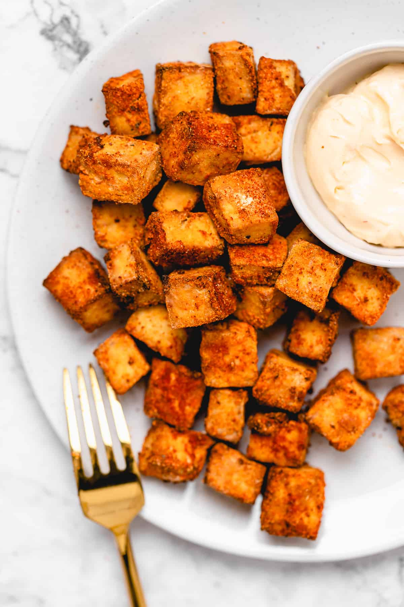

Air Fried Tofu!

Yum Tofu
Ingredients
1 block firm tofu
olive oil
salt & pepper
Directions
Drain Tofu
Cut tofu into bite sized chunks
Toss tofu with olive oil, salt, and pepper. Ensure all pieces are coated
Air fry for 15 minutes and enjoy!